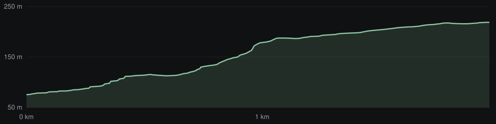

El Mont Royal, hasta el mirador Kondiaronk
Actualizado el 21 de noviembre de 2026
La montaña en medio de la ciudad: desde el centro, una subida corta por los bosques del parque diseñado por Frederick Law Olmsted hasta la vista más famosa de Montreal.

- Distancia
- Unos 1,4 km desde lo alto de la calle Peel al mirador, unos 2 km hasta la cruz
- Desnivel
- Unos 150 m
- Duración
- De 1 h a 1 h 30 ida y vuelta
- Dificultad
- Fácil a moderada, con escaleras si tomas el atajo
- Salida
- Lo alto de la calle Peel, en la avenida des Pins
- Temporada
- Todo el año
Mapa

Perfil de altitud

El recorrido
Desde lo alto de la calle Peel, cruza la avenida des Pins y toma el sendero que sube por el bosque. Llega al chemin Olmsted, el ancho camino de grava que sube en suaves curvas, trazado por Frederick Law Olmsted, el paisajista del Central Park de Nueva York.
Una escalera sube recta por el escarpe hasta el mirador Kondiaronk, frente al chalet del Mont-Royal: el centro a tus pies, el río y, con el cielo despejado, las colinas de la Montérégie. El mirador lleva el nombre de Kondiaronk, el jefe wendat que contribuyó a la Gran Paz de Montreal en 1701.
Sigue por el circuito de la cumbre hasta la cruz del Mont Royal, iluminada cada noche sobre la ciudad, y baja por el mismo camino o por el chemin Olmsted.
Conviene saber
- Escaleras o curvas. Las escaleras son rápidas pero empinadas; el chemin Olmsted es más largo y suave.
- Al anochecer. Las luces de la ciudad desde el mirador valen el paseo. Lleva una linterna para el bosque.
- En invierno. Los senderos pueden estar helados: los crampones ayudan.
- Un parque compartido. No salgas de los senderos para proteger el bosque de la montaña.
Fotos


Guarda el día con Arpente
Toca grabar al salir y guarda el iPhone en el bolsillo. Arpente dibuja tu recorrido y mide la distancia, el tiempo y el desnivel, incluso con la pantalla apagada. Añade una foto y una nota, y la salida queda en tu diario. Descubre Arpente.
Otras salidas
 Mont Albert11,6 km ida y vuelta por la cara norte, o un circuito de 17,3 km
Mont Albert11,6 km ida y vuelta por la cara norte, o un circuito de 17,3 km Acropole des DraveursUnos 10,4 km ida y vuelta hasta la primera cumbre, 11,2 km hasta la tercera
Acropole des DraveursUnos 10,4 km ida y vuelta hasta la primera cumbre, 11,2 km hasta la tercera Sentier de la StatueUnos 7,6 km ida y vuelta, o 3,6 km ida y vuelta hasta el mirador Bellevue
Sentier de la StatueUnos 7,6 km ida y vuelta, o 3,6 km ida y vuelta hasta el mirador Bellevue Canal de Lachine14,5 km solo ida, del Viejo Puerto a Lachine
Canal de Lachine14,5 km solo ida, del Viejo Puerto a Lachine
El trazado del mapa es orientativo, calculado con BRouter sobre datos de OpenStreetMap (© colaboradores de OpenStreetMap, ODbL); altitudes SRTM. No sustituye al mapa oficial del parque. Las distancias, desniveles y tiempos de la tabla vienen de fuentes de los parques: consulta las condiciones antes de ir.